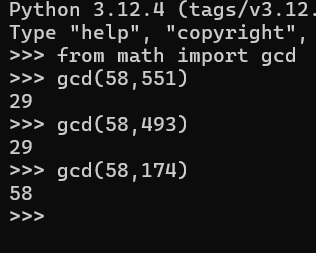
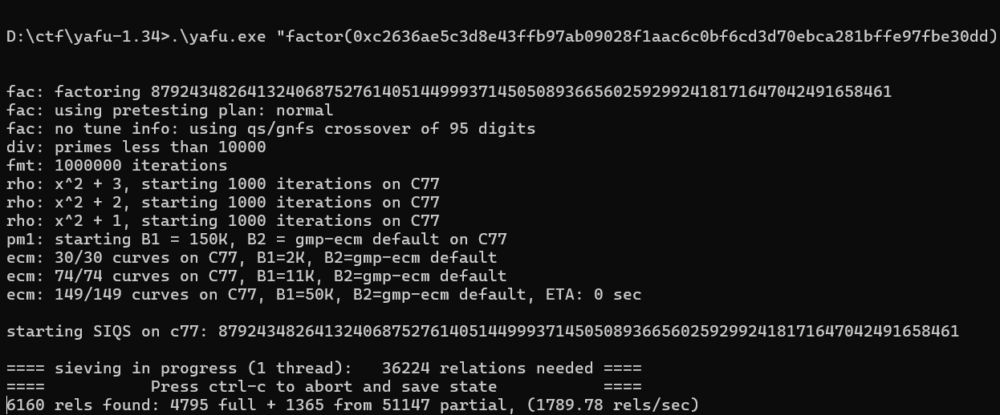
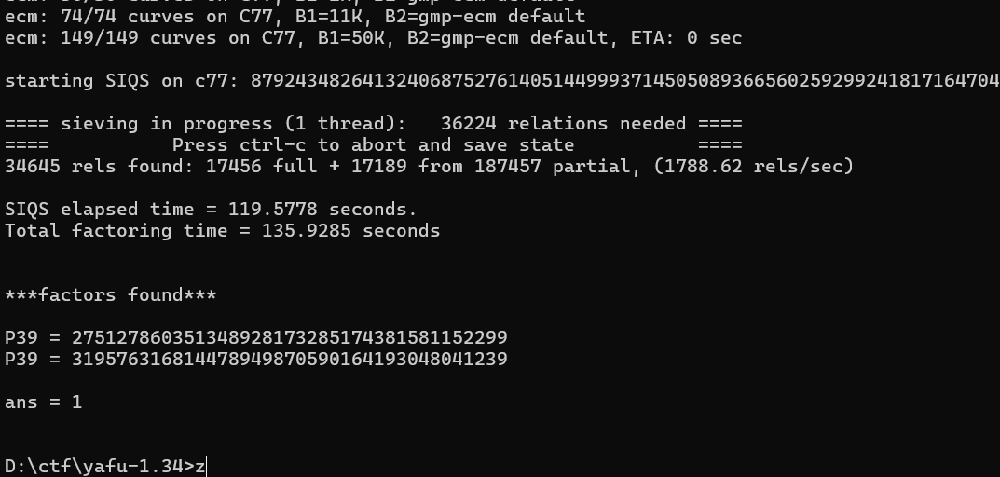

CTF101 CRYPTO Lab1
3240102120
Task1
这里要进行维吉尼亚密码密码破译。给定了一长串密文文本，同时还有一个 python 程序用于从明文生成密文。
手动指定 plain 内容，发现对于相同的明文，每次执行后的加密结果都不一样，字符替换都不同，而且 print 出来的密钥串也不同。唯一相同的是空格位置。考虑以空格位置为突破点进行操作。
阅读完程序后可知加密方法为使用 randrange 生成不定长 (15 ~ 29) 的 1 ~ 96 数字作为密钥串，然后按维吉尼亚方法对原字符串进行加密，区别在于本程序是进行了乘法运算，而空格位于 index=0 的位置，因此对于任何空格都不加密。
首先还原原文为一个 list（此处省略结果）：
| with open("./venege.txt", 'r') as f:
cipher = f.read()
textline=' !"#$%&\'()*+,-./0123456789:;<=>?@ABCDEFGHIJKLMNOPQRSTUVWXYZ[\\]^_`abcdefghijklmnopqrstuvwxyz{|}~\t\n'
def reget(s):
return [textline.index(i) for i in s if i in textline]
|
既然是乘法运算，紧跟着就会有下个突破口：密文列实际上是一个余数列。那么理论上来说，我们需要做的就是对 1*1 ~ 96*96 里的所有数做质数分解，以此来确定每一个密文数可能对应的明文。又因为两个乘数都在 1 ~ 96 内，因此写一个这样的函数来试图反推密文：
| def unlock_1(s):
pos=[]
_x=0
_m=s
while _m<9217:
# pos: list[tuple[int, int]]
pos.extend([(textline[_m//_i],_i) for _i in range(1,97) if _m%_i==0 and _m//_i < 97])
_x+=1
_m+=97
return pos
|
这个函数会返回所有密文可能对应的明文结果及其对应的密钥。虽然经过测试，每个密文都可能还原成其他 95 种中的任意一种：
| testt=[]
for test in textline[1:]:
test1=set([i[0] for i in unlock_1(test)])
test2=set(textline[1:])
test3=len(list(test2-test1))
if test3>0:
testt.append(test)
print(testt)
#输出：[]
|
再考虑回维吉尼亚的原理：密钥是循环的，也就是说一定是 15~29 中的一种循环。应该想办法找到这个循环周期 T，这样可以确定每 T 位的加密密钥是一样的，进而可以尝试确定。
查看原文，因为英文里面“the”使用率最高，所以尝试找到前 30 位里那些被空格分割开的长为 3 的字符，然后全文寻找确定他们的出现频率。这里很轻松地找到了{gY。全文出现了 7 次，基本锁定这就是 the。再对其出现位置进行查找：
| x=[]
for index,i in enumerate(cipher):
if i =="{" and cipher[index+1]=="g" and cipher[index+2]=="Y":
x.append(index)
for i in range(len(x)-1):
print(x[i+1]-x[i], end=" ")
#输出：58 551 493 174 377 435
|
简单测试了两个 gcd 发现它们都是 29 的倍数：

于是可以考虑 T=29。
有了这几个初始条件，我们基本可以继续往后确定几乎所有内容了。首先第四五六位密钥可以直接确定为 90,67,43：
| a,b,c=unlock_1(rere[3]), unlock_1(rere[4]), unlock_1(rere[5])
for i in a:
if i[0]=="t":
print(i)
for i in b:
if i[0]=="h":
print(i)
for i in c:
if i[0]=="e":
print(i)
#输出：('t', 90)
#('h', 67)
#('e', 43)
|
密钥暂时确定为[-1,-1,-1,90,67,43,-1,-1,...,-1]（-1 代表不确定）。
为了方便观察，我们用数字代表还未解密的部分，用解出的字母代表已解出的部分，每 29 位一分割，按行排列：
| segments = [rere[i:i+29] for i in range(0, len(rere), 29)]
rrkey=[-1,-1,-1,90,67,43,-1,-1,-1,-1,-1,-1,-1,-1,-1,-1,-1,-1,-1,-1,-1,-1,-1,-1,-1,-1,-1,-1,-1]
def unlock_2(s,key):
x=unlock_1(s)
for i in x:
if i[1]==key:
return i[0]
for i in segments:
for j in [3,4,5]:
if i[j]==0:
i[j]='空'
continue
i[j]=unlock_2(i[j],rrkey[j])
with open("vegene_first.txt", "w", encoding='utf-8') as out_file:
for i in segments:
i=[x if x!=0 else '空' for x in i]
line = ""
for x in i:
line += f"{x:<2}" if x=="空" else f"{x:<3}"
out_file.write(line + "\n")
|
由于每 29 位密钥重复，因此每行的 456 列均已知密钥，那么就可以直接解密。注意为了对齐使用了空格，而为了防止歧义，暂时使用“空”代替空格。
发现遗漏了换行符，紧急补救一下：
| with open("vegene_first.txt", "w", encoding='utf-8') as out_file:
for i in segments:
i=[x if x!=0 else '空' for x in i]
i=[x if x!='\n' else '新' for x in i]
line = ""
for x in i:
line += f"{x:<2}" if x in["空",'新'] else f"{x:<3}"
out_file.write(line + "\n")
|
观察已有内容，发现第五十行中有一个 AA{，所以直接考虑第三列的 47 对应 A。得到密钥 22。
| def unlock_3(s,t):
x=unlock_1(s)
for i in x:
if i[0]==t:
return i[1]
print(unlock_3(47,'A'))
|
感觉做到这工具函数差不多齐了，就是 unlock_1,2,3。unlock1 因为发展原因被黑盒套起来了，所以只要知道某一列的数对应的字母就可以直接用 unlock_3 拿密钥，更新 rrkey 然后让程序调用 unlock_2 用密钥解这列其他数。循环直到解出 29 个数为止。这里推理过程有时候依靠灵感，所以尽可能简写，不再赘述。为了不再只适应 345，以下对 for i in segments 改进：
| for i in segments:
for index,j in enumerate(rrkey):
if index>=len(i):
break
if j!=-1:
i[index]=unlock_2(i[index],j)
if i[index]==0:
i[index]='空'
|
以下是推理：
44 行：空 doin 43 空 猜测 doing，第七列 43=g。
13 行：.Aft 32 56 空 猜测 After，第八九列分别有 32=e，56=r
3 行：空 Am 9 64 81 46 96 24 空，因为前面是 the，所以考虑可能是 American，暂时先不写。
6 行：空 citize 65 8 空，猜测 citizen, 虽然 8 还不确定，但是确定第九列 65 是 n。
6 行确定了第三行第九列是 e，所以确定是 American，于是直接解出 10~15 列
18 行：空 New 空 Yo 61 5 88 空，猜测是 New York, 或 .。先认定 16,17 列的 61,5 是 rk
31 行：空 physi 71 58 空，猜测是 physics，解出 18,19 列的 71,58 是 cs
1 行：空 the 空 nineteen 57 24 空，猜测是二十世纪，进而推测前面的 85 82 是 In，解出 1,2,20,21 列。但是似乎 In 解错了，退回 -1
3 行：空 langu 49 62 26 44 空猜测是 language，解出 22,23,24 列
4 行：空 begi 92 ... 猜测是 begin...，解出 25 列
6~7 行：United 空 43 6 54 16 93 s.。直接猜测 United States，解出 27,28,29,1,2 列。（到这验证出前面那个 In 猜错了，实际是 By）
1 行：cen 75 ury, 猜 26 列 75=t。解出全部内容
最后，只需要写个小脚本还原文本即可：
| with open("./vegene_first.txt",'r',encoding='utf-8') as f:
c=f.read().split("\n")
this=''
for line in c:
singles = line.split(" ")
for si in singles:
if si=="":
continue
elif si == "空":
this+=" "
elif si == "新":
this+="\n"
else:
this+=si
with open("./vegene_final.txt",'w',encoding='utf-8') as f:
f.write(this)
|
原文文本为：
| By the...ficient icebox.
fLaG:AAA{i_like_T0ef1_v3ry_M3uh!!!}
But as ea...
|
得到 flag：AAA{i_like_T0ef1_v3ry_M3uh!!!}
说实话，这个题真的有点给我做爽了，感觉思路不会像 misc 一样特别难搜，但是又不会像 rsa 那样很轻松地拿到答案。总之是个好题！
因为题目的脚本是随写随删的，所以也没有留下特别有用的全部解密脚本，以下是用完的碎片脚本，将就着看：
| '''with open("./vegene.txt", 'r') as f:
cipher = f.read()
textline=' !"#$%&\'()*+,-./0123456789:;<=>?@ABCDEFGHIJKLMNOPQRSTUVWXYZ[\\]^_`abcdefghijklmnopqrstuvwxyz{|}~\t\n'
def reget(s):
return [textline.index(i) for i in s if i in textline]
def unlock_1(s):
pos=[]
_x=0
_m=s
while _m<9217:
# pos: list[tuple[int, int]]
pos.extend([(textline[_m//_i],_i) for _i in range(1,97) if _m%_i==0 and _m//_i < 97])
_x+=1
_m+=97
return pos
rere=reget(cipher)
segments = [rere[i:i+29] for i in range(0, len(rere), 29)]
def unlock_2(s,key):
x=unlock_1(s)
for i in x:
if i[1]==key:
return i[0]
def unlock_3(s,t):
x=unlock_1(s)
for i in x:
if i[0]==t:
return i[1]
_c=[75]#num
_d="t"
for ii,jj in zip(_c,_d):
print(unlock_3(ii,jj),end=",")
pass
rrkey=[51,14,22,90,67,43,17,82,48,17,41,33,89,94,60,80,13,72,79,18,65,50,20,6,36,39,56,7,65]
for i in segments:
for index,j in enumerate(rrkey):
if index>=len(i):
break
if j!=-1:
i[index]=unlock_2(i[index],j)
if i[index]==0:
i[index]=' '
with open("vegene_first.txt", "w", encoding='utf-8') as out_file:
for i in segments:
i=[x if x!=' ' else '空' for x in i]
i=[x if x!='\n' else '新' for x in i]
line = ""
for x in i:
line += f"{x:<2}" if x in["空",'新'] else f"{x:<3}"
out_file.write(line + "\n")
'''
with open("./vegene_first.txt",'r',encoding='utf-8') as f:
c=f.read().split("\n")
this=''
for line in c:
singles = line.split(" ")
for si in singles:
if si=="":
continue
elif si == "空":
this+=" "
elif si == "新":
this+="\n"
else:
this+=si
with open("./vegene_final.txt",'w',encoding='utf-8') as f:
f.write(this)
|
Task2
这里选择 Task2.2：RSA 的密钥解析
题目叽里呱啦说啥呢，看看关键部分就几个，一个是很 PEM 的密钥前半部分，另一个是十六进制密文。看起来就是想办法解析 PEM 格式密钥然后把密文解成明文即可。
MIGrAgEAAiEAwmNq5cPY5D/7l6sJAo8arGwL9s09cOvKKBv/6X++MN0CAwEAAQIgGAZ5m9RM5kkSK3i0MGDHhvi3f7FZPghC2gY
先用 len 看下长度，发现是 99，所以先尝试解密 100 位：
3081ab020100022100c2636ae5c3d8e43ffb97ab09028f1aac6c0bf6cd3d70ebca281bffe97fbe30dd020301000102201806799bd44ce649122b78b43060c786f8b77fb1593e0842da06
上网上找了一下 PKCS#1 的格式，3081ab 是头，020100 是 version=0，后面 02 开头的是 n 和 e，这里 0221 是 n 有 0x21 字节，后面 66 位都是 n，也就是 n=0xc2636ae5c3d8e43ffb97ab09028f1aac6c0bf6cd3d70ebca281bffe97fbe30dd；接下来 0203 是 e 有 3 字节，0x010001=65537。接着就是 d 了，先是 0220 说明有 32 字节，但是只有 42 位，所以先暂且放下 d 的破译，想办法利用一下 n 和 e。
不过还好爷爷奶奶买了我最爱吃的 yafu-x64.exe，启动一下尝试分解 n：

哇，奶奶讲了我最喜欢的 factor 哄我入睡：

那么 varphi(n) 就很好得到了，接着做模逆就能求私钥了。请出老脚本：
| p=275127860351348928173285174381581152299
q=319576316814478949870590164193048041239
n=0xc2636ae5c3d8e43ffb97ab09028f1aac6c0bf6cd3d70ebca281bffe97fbe30dd
e=65537
phi=(p-1)*(q-1)
d=pow(e, -1, phi)
c="1c194cd4f48d77b2e14cace43869bea17615ab23da0ef63b7bf56116ad3ac93b"
from Crypto.Util.number import long_to_bytes
m=pow(int(c,16),d,n)
print(long_to_bytes(m).decode('utf-8'))
|
执行脚本输出结果：AAA{N3veR_Le4k_PR1va7eK3y_Ag41N}
但是这样还是太吃操作了，假如有人的爷爷奶奶不给他买 yafu 吃，也不让他玩 factordb，那就要尝试高位攻击了。
首先已知长度是 64 位 16 进制，已经泄露的有 42 位1806799bd44ce649122b78b43060c786f8b77fb1593e0842da06，需要破开剩下 22 位，也就是 88bit。
在网上找了一下关于高位爆破的知识，看到高位爆破不止关于 d 的，还有别的内容的。不过 d 的高位爆破还是希望先转到高位 p，再尝试用 p 去还原。
原理如下： $$ ed=k\varphi(n)+1 $$ 假设已知的 $ d $ 是 $ d_0 $ ，设 $ s=p+q $ ，就有 $$ ped = pk(n-s+1)+p $$ 而根据 $$ ps = p^2 + pq = p^2 + n $$ 代入就可以消掉 $ s $ ，得到 $$ ped = kpn - k(p^2+n) + pk + p $$ 而 $$ d=d_0 + x $$ ，这里 $ x $ 是不知道的低位 $ d $ ，于是 $$ ped_0 + pex = kpn+pk+p-kp^2-kn $$ 由于 $ x $ 不知道且比较小，而且建立在已知高位爆破 $ p $ 的算法基础上，所以可以直接忽略 $ pex $ 这一项，直接求解 $$ ped_0 = kpn+pk+p-kp^2-kn $$ 可以得到一个近似的 $ p $ ，因为高位的 $ d $ 是准确的，所以这里 $ p $ 的高位也是准确的。接下来再进行高位爆破 $ p $ 即可。
而高位爆破 $ p $ 的原理是，因为 $ p | n $ ，所以对于方程 $$ x \equiv -p_{high} (mod p) $$ 来说， $$ x \equiv -p_{high} (mod n) $$ 也能求得一个可能满足的小解。从而解得全部 $ p $ 。
然后又花了 114514 分钟学了一下 sage，大概写了下面这个程序：
| from sage.all import *
from Crypto.Util.number import *
from tqdm import tqdm
d0=0x1806799bd44ce649122b78b43060c786f8b77fb1593e0842da06
n=0xc2636ae5c3d8e43ffb97ab09028f1aac6c0bf6cd3d70ebca281bffe97fbe30dd
e=65537
PR.<x>=PolynomialRing(RealField(1000))
p=0 #初始化，如果后面没爆出来会raise error，所以不用assert
for i in tqdm(range(1,e)):
f=e*d0*x-(i*x*(n+1)+x-i*n-k*(x**2))
xyz=f.roots() #求解
for x in xyz:
ZZn=Zmod(n)
ph=int(x[0])
PR.<X>=PolynomialRing(ZZn) #再建一个用来爆p的环
fp=X+ph
roots2=fp.small_roots(x=2^92,beta=0.4) #求解
y=int(roots2[0])
p=int(gcd(y+ph,n))
if 1<p<n and n%p==0: #爆出正确的p了，求q求d即可，否则继续找下一个x解
q=n//p
varphi=(p-1)*(q-1)
d=inverse(e,varphi)
print(f"found p:{p}\n and q:{q}\n and d:{d}")
exit()
|
总而言之，感觉 rsa 相对来说更吃操作一点，那一步直接把 pex 给省掉了我是真没想到啊，这算法谁能想出来呢，居然还能靠 p 高位爆 p，不得不佩服人类的智慧